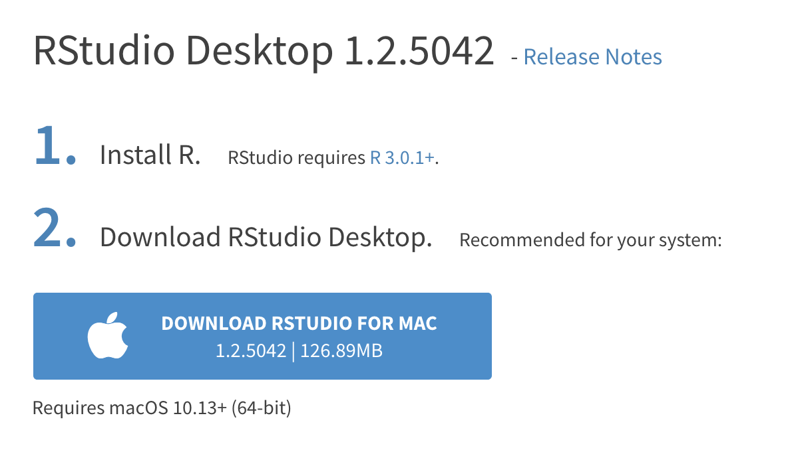
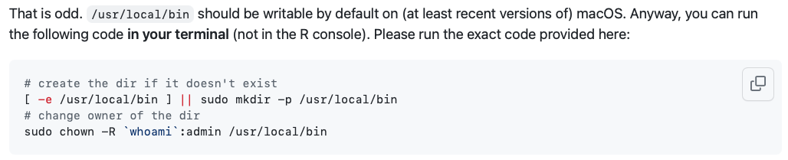

Installing R, RStudio (Posit), tidyverse, and tinytex
As mentioned in the syllabus, you will do all of your work in this class with the open source programming language R. You will use RStudio/Posit as the main program to access R. Think of R as an engine and RStudio/Posit as a car dashboard—–R handles all the calculations and the actual statistics, while RStudio provides a nice interface for running R code.
RStudio is in the process of rebranding as Posit. You’ll see both along the way.
Hopefully you’re well-versed in dealing with these things, but if you’re lost, here’s how you install the required software for the course.
Install R
I have created a video walkthrough for installing R for another course, but it is useful here. You can see it here ]
First you need to install R itself (the engine).
- Go to the CRAN (Collective
RArchive Network)1 website: https://cran.r-project.org/ - Click on “Download
RforXXX”, whereXXXis either Mac or Windows:
- If you use macOS, scroll down to the first
.pkgfile in the list of files. In this picture, it’sR-4.0.0.pkg. R is constantly being updated so choose the most recent one and download it.

- If you use Windows, click “base” (or click on the bolded “install R for the first time” link) and download it.
Double click on the downloaded file (check your
Downloadsfolder). Click yes through all the prompts to install like any other program.If you use macOS, download and install XQuartz. You do not need to do this on Windows.
Select the most recent release
The pictures above are probably 2 years old now – select the most recent versions of R and RStudio/Posit available in regular release.
Install RStudio/Posit
Next, you need to install the most recent version of RStudio, the nicer graphical user interface (GUI) for R (the dashboard). Once R and RStudio/Posit are both installed, you can ignore R and only use RStudio. RStudio will use R automatically and you won’t ever have to interact with it directly.
- Go to the free download location on RStudio’s website: https://www.rstudio.com/products/rstudio/download/#download
- The website should automatically detect your operating system (macOS or Windows) and show a big download button for it:

If not, scroll down a little to the large table and choose the newest version of RStudio that matches your operating system (this picture will be out of date quickly; choose the most recent version available)

- Double click on the downloaded file (again, check your
Downloadsfolder). Click yes through all the prompts to install like any other program.
Double click on RStudio to run it (check your applications folder or start menu).
Install tidyverse
R packages are easy to install with RStudio. Select the packages panel, click on “Install,” type the name of the package you want to install, and press enter.

This can sometimes be tedious when you’re installing lots of packages, though. The tidyverse, for instance, consists of dozens of packages (including the ever-present ggplot2) that all work together. Rather than install each individually, you can install a single magical package and get them all at the same time.
Go to the packages panel in RStudio, click on “Install,” type “tidyverse”, and press enter. You’ll see a bunch of output in the RStudio console as all the tidyverse packages are installed.

Notice also that RStudio will generate a line of code for you and run it: install.packages("tidyverse"). You can also just paste and run this instead of using the packages panel. Hopefully you’ve experienced installing packages before now; if not, consider this a crash course!
Only install a package once
You only need to use install.packages() once on your computer, direclty into the console. To call up an installed package, you’ll use library() instead. You can end up with some strange errors if you add install.packages() to your R code.
Install tinytex
When you knit to PDF, R uses a special scientific typesetting program named LaTeX.2
LaTeX is neat and makes pretty documents, but it’s a huge program—the macOS version, for instance, is nearly 4 GB. To make life easier, there’s an R package named tinytex that installs a minimal LaTeX program and that automatically deals with differences between macOS and Windows.
Here’s how to install tinytex so you can knit to pretty PDFs:
- Use the Packages in panel in RStudio to install tinytex like you did above with tidyverse. Alternatively, run
install.packages("tinytex")in the console. - Run
tinytex::install_tinytex()in the console. - Wait for a bit while
Rdownloads and installs everything you need. - The end! You should now be able to knit to PDF.
Find the course assignment template (for EC242, see the Assignments page), right-click to download it (don’t just click on it - that won’t work), open it in Rstudio, and without changing anything, click the “knit” button to test out your install. Your system should open a PDF that looks like something like this:

See the Markdown and R Markdown sidebars for instructions on using the template.
Uh-oh Trouble: Some common errors
It’s not uncommon to have some issues when you first try to knit, and often they are easy to fix. Frustratingly, R does not give very informative errors, so troubleshooting is a bit of an art.
First, make sure you followed the steps above and that no errors happened along the way. If your computer tells you that it failed to download something, then that’s the first thing to fix and not something related to R or R Studio. Now, assuming the previous steps all completed…
The unicode error
What is it?
While R does not usually give informative errors, one that can be easily diagnosed with the error is one that has the words “unicode error” in it. It will look something like this (note the ! LaTeX Error: Unicode character part ):
This error means you’re trying to use a character that LaTeX (the engine that renders your PDF) isn’t able to handle. In the above example, the issue is Unicode character U+03B2. If you google Unicode U+03B2 you will learn that it is the greek letter beta.
Why did it happen?
Two possibilities:
If your computer’s system location is set such that it uses an Asian locale to set the format for your date (which is probably the case if your system date is displayed using non-arabic numerals), then the Unicode error is probably coming from this. You can check this by typing in the R Console
format(Sys.time(), '%d %B, %Y'). If it returns non-arabic numerals, this is the issue.You copy-pasted an assignment question and in the text you copied, there was a greek letter or other character that LaTeX can’t handle.
How do I fix it?
- An easy fix for issue #1 is to replace the line in the course assignment template that uses the system date with the date written out. The header pictured below sets up all the information RMarkdown needs to give to LaTeX. The date YAML header here is asking R to run the command
format(...)and use whatever is returned as the date, and in this case, it’s returning characters that LaTeX can’t process. To fix, replace everything inside the quotes with the date, written out: “January 1, 2024”. Take out the backticks and the letterr, but keep the outside double-quotes. You’ll have to manually write the date on your assignments like it’s 2005.
- An easy fix for issue #2 is to take out the offending character. If you want to use greek letters, LaTeX has it’s own method for that:
$\beta$will render to a greek letter beta. Most greek letters can be typeset this way (with the backslash and everything).
The Tex Capacity Exceeded error
Looks like this:
Why did it happen
Somewhere in your code chunk in your .RMD, you have left a line that looks like this:
myDataFrameYou might have been working with some data (in a data.frame called myDataFrame) and left it alone on a line. When you put it alone on a line, R tries to print out the whole thing. When it’s a very large data.frame (many columns and many rows), then it spits out too much for LaTeX to handle, and you get this error.
How do I fix it?
Find the line in your code (not in the text, but in the code) and remove it.
Mac permissions
This error looks something like this:
Why did it happen?
The key here is that it says something about not having permission to write in usr/local/bin. This means your mac somehow thinks it can’t write to the hard drive, or at least the folder that contains your R. It usually occurs when you’re trying to update packages, or install tinyTex.
How do I fix it?
The error gives a link that tells you how to do it. It requires using terminal on your mac (hit command+space and type “terminal” to open the terminal). Then, follow the instructions at the given link. I have included screenshots of the information at the link below. Type these two lines in verbatim into the terminal (don’t copy-paste):

Also, if the error happened when you were trying to install tinyTex, then also do this step afterwards (also from the link):
What about this error….?
If you are still hitting an error, then head to the course Slack. When you post a question, make sure to
Include a screenshot (use
screenshoton mac orsnipping toolon Windows). Both of these programs can save the screenshot to the clipboard, which lets you paste directly into Slack so you don’t have to save an image then upload. On mac, command+shift+4 lets you draw a box around the screen to capture and then lets you paste it directly. It’s quite handy!State what you have tried to do to address the issue.
We rarely see problems that cannot be addressed with some proper troubleshooting.
And if it still doesn’t work and the lab is due in one hour…?
Set up an account on posit.cloud (former Rstudio.cloud). Make a workspace, follow the package / tinyTex installation instructions, upload your template, and work there. You will not run into system issues there, and it is always available and free.
Footnotes
It’s a goofy name, but CRAN is where most
Rpackages—and R itself—lives.↩︎Pronounced “lay-tek” for those who are correct; or “lah-tex” to those who love goofy nerdy pronunciation. Technically speaking, the x is the “ch” sound in “Bach”, but most people just say it as “k”. While either saying “lay” or “lah” is correct, “layteks” is frowned upon because it clearly shows you’re not cool.↩︎